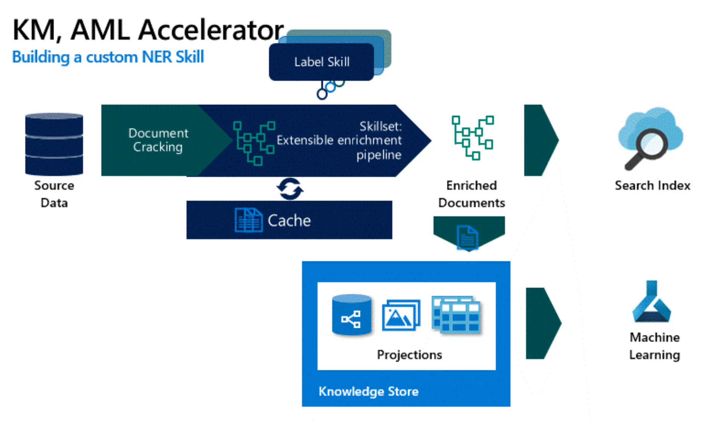

Reusable Technology Accelerator
This repo walks through the process of creating a knowledge mining solution to enrich your data by identifying custom entities in a corpus of data using an AI custom skill. We’ll leverage a number of capabilities in Azure Cognitive Search and Azure Machine Learning to extract entities from documents.
The solution will show you how to:
If you already have labelled data or want to use the sample data provided with this repo, you can skip ahead to Step 4.
- Use the labeled data to train a Named Entity Recognition (NER) Model in Azure Machine Learning using a BERT model designed to extract entities from documents. The code used to train the model was derived from the NLP Recipes Repo.
- Integrate the BERT NER custom skill with Azure Cognitive Search to project the identified entities and content of each document into the knowledge store and the search index.

This is designed to be used in conjunction with the Knowledge Mining Solution Accelerator. After you train and deploy the model, you can easily integrate the model with the solution accelerator to showcase the results in a Web App.
Manufacturing,FSI
Azure Machine Learning,Cognitive Search